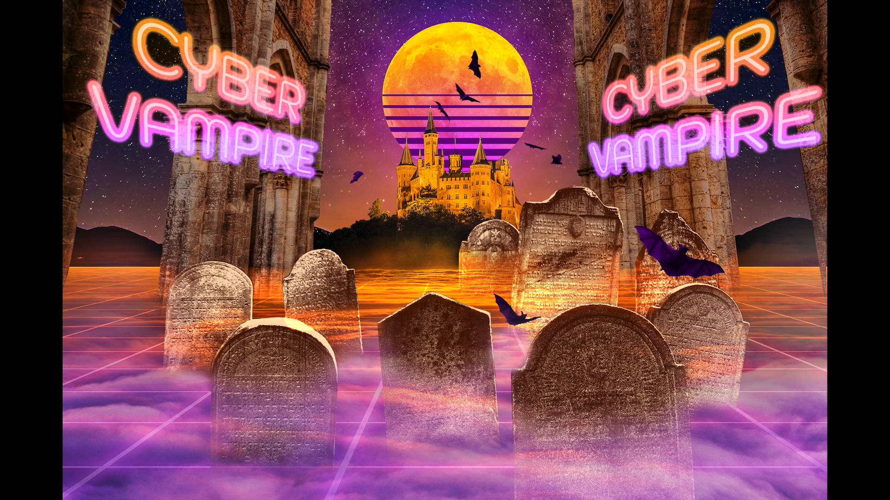

Here's my artwork.

The Passenger was a photoshop warm up by recreating the movie poster below. kind of like stretching before a work out, it helped to refresh my skills before putting them to the test.

-------------
Vaporgrave was the first original image I've made since taking an extended break from Photoshop, featuring a long standing and lofty goal of combining retro 80's tech elements with high gothic victorian elements to create a unique juxtaposition. Vaporgrave is a rare success in years of trial and error in trying to make two vastly opposite aesthetics mesh into a cohesive style.
-------------
One's thoughts was my first venture into the world of video editing in premeire pro. It was an enlightening experience that would prove useful for my future works within the adobe software.
-------------
Worm Circuls was my first time planning a production from the beginning, filming said production, and then editing it in adobe premiere pro without guided assistance, though it was initially rejected and required re-filming to achieve the desired effect.
-------------
Sticks and stones is one of my darker works, drawing on my... woeful past to serve as a cautionary tale and PSA against bullying and carless words. This work was especially important to me in my desire to never see someone else go through what I did alone.
-------------
Huh, looks like that's it for now. Try checking back in a few weeks to see if I've uploaded anything new? This is only my most recent completed works, all of my older stuff hasn't been uploaded yet.